VICTOR （ビクター）
1927年設立のレコードと音響製品の総合ブランド。戦前の蓄音機時代からのキャリアを誇り、テレビジョン受像器の開発、EPレコード・ステレオLPレコードの発売など多くの「日本初」の実績を持つ。しかし一方で４チャンネルステレオにおけるCD-4規格や、カセットデッキのANRSノイズリダクション、映像ディスクでのVHD規格など失敗に終わった商品も多い。
資本的には米国ビクターの日本法人からスタートした。明治・大正の時代から米国ビクターの製品は輸入されていたが、当時の高額の輸入税を避けるための国産化が誕生のきっかけ。様々な企業の資本傘下を経て、戦後松下電器産業（現・パナソニック）の傘下となったが、2008年にケンウッドとともにJVC・ケンウッド・ホールディングスの傘下となり、2011年にJVCケンウッドに吸収合併され、会社としては消滅し、ブランドとなった。
蓄音機からの伝統を持つメーカーだけに、アナログ関連製品には定評があり、ディスクリート４チャンネルステレオのCD-4に対応する為、高域特性の優れた「シバタ針」を開発し採用した4MD-1Xは、カートリッジの世界に革命をもたらしたとする意見もある。
VICTOR （ ビクター）の製品を以下のように分類する。（この分類は個人的な意見で、メーカーの分類ではありません）
�T.カートリッジ
1.IM型カートリッジ
ビクターカートリッジは1970年初頭まではIM（インデュースト・マグネット）型が中心だった。
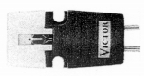
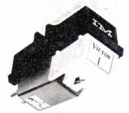
2.MM型カートリッジ
４チャンネルステレオにおけるCD-4のレコードは、通常のLR信号の上の周波数にリヤのLR信号を入れる方式がとられていた。その為に高域特性の優れた「シバタ針」を開発し、採用したのが4MD-1Xである。そうした流れを汲むためか、上位モデルのシバタ針採用モデル、廉価モデルでも楕円針採用モデルがラインナップされていた。
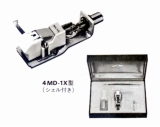
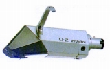
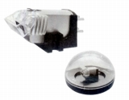 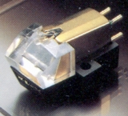
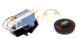
3.MC型カートリッジ
国内の多くのブランドと同様に、1970年代半ばまではMM型のメーカーであったが、1970年代後半にMC型を主力とするようになった。1977年のMC-1が同社最初のMC型。半導体製造技術を応用したプリント式のマイクロ・コイルを採用し、針の至近に設置、ダイレクトカップル方式を名乗った。MC-1ではLSI技術を応用した単層コイルだったが、やがて超LSI技術を応用した多層コイルに発展していった。
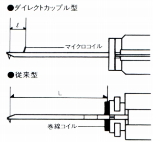
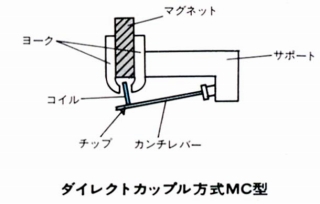
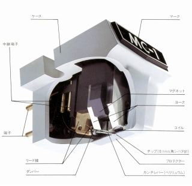
・ダイレクトカップル方式
従来の巻線コイルに変えて、極小のマイクロコイルを半導体製造技術の応用でフォトエッチングで作成、それを針先近くに取り付けることにより、カンチレバーのたわみなどの悪影響（位相の乱れ・遅延など）から逃れる形式である。アプローチは違うが、イケダのカートリッジと通じる部分がある。
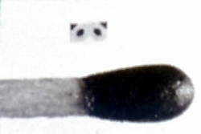
（MC-1のマイクロ・コイル ポリイミド系耐熱フィルムに導体をフォトエッチングで形成、ピッチ約32ミクロン、線幅約16ミクロン、約1�o角のコイル）
（ピッチ約8ミクロン、線幅約4ミクロンのコイルを3層重ねた多層マイクロコイルに進化、出力1.3mVのMC-101を生み出した）
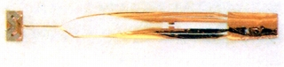
（また、プリント化はリードワイヤーまでに及んだ）
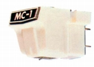
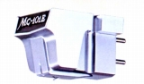
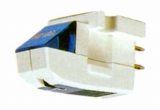
(MC-100E)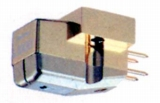
�U.昇圧トランス・ヘッドアンプ
1970年代半ばまでMM型メーカーであった為、昇圧トランス・ヘッドアンプはMC-1にあわせ登場したMC-T100だけのようだ。
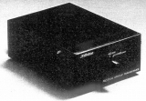
�V.トーンアーム
フォノモーターやプレイヤーキャビネットまであつかった関係か、アームはそれなりの機種数があった。1980年代前半に撤退。
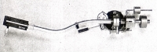
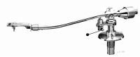
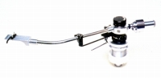
�W.その他
�@シェル
ラボラトリーシリーズの超高級シェルあり。
�A超ラボパーツ
ビクターサービスが販売していたユニークな製品。
�Bその他
カートリッジキーパー1点、各種クリーナー4点